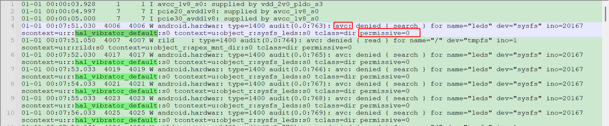
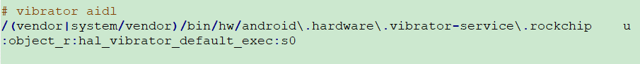
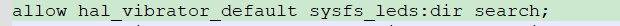

Android Sepolicy
简介
--- Android安全模型的一部分，一种权限管理策略，即使是进程具有root权限，SELinux也能通过创建⾃动化的安全策略(sepolicy)来限制特权进程来增强 Android的安全性 ；主要就是限制Android的权限，避免滥用造成的安全风险问题。
查看selinux的详情
-
ps -z --- 显示selinux的角色、类型、安全级别；格式：user：role：type：rank
ps -Z LABEL USER PID PPID NAME u:r:init:s0 root 1 0 /init u:r:kernel:s0 root 2 0 kthreadd ...- user；SEAndroid中定义了⼀个SELinux⽤户，值为u；
- role；role是⾓⾊之意，它是SELinux中⼀种⽐较⾼层次，⼀个u可以属于多个role，不 同的role具有不同的权限；
- init；代表该进程所属的Domain为init，是这个进程type，在andorid⾥⾯，定义了100多
- type；进程所属的类型；
- S0；是⼀个安全的等级MLS将系统的进程和⽂件进⾏了分级，不同级别的资源需要对应级别的进程 才能访问；
selinux 关键文件
-
政策文件
--- 文件格式：以*.te 文件结尾
--- 路径：/device/manufacturer/device-name/sepolicy
==> 一般尽可能的更新现有文件， 也可创建新的政策文件
-
上下文描述文件
- file_contexts：文件分配标签
- genfs_contexts：为不支持扩展属性的文件系统(proc、vfat)分配标签
- property_contexts：为Android系统属性分配标签，便于控制哪些进程可以设置这些属性
- service_contexts：Android Binder 服务分配标签，以便控制哪些进程可以为相应服务添加 （注册）和查找（查询）Binder 引⽤
- seapp_contexts：为应⽤进程和 /data/data ⽬录分配标签
- mac_permissions.xml：根据应⽤签名和应⽤软件包名称（后者可选）为应⽤分配 seinfo 标 记
-
BoardConfig.mk makefile
修改或添加政策⽂件和上下⽂的描述⽂件后，请更新您的 /device/rockchip/devicename/BoardConfig.mk BOARD_SEPOLICY_DIRS += \ <root>/device/rockchip/device-name/sepolicy (8.0+版本不需要修改以下⽂件) BOARD_SEPOLICY_UNION += \ genfs_contexts \ file_contexts \ sepolicy.te。
selinux 问题确认
- user版本相关功能不正常，userdebug版本功能正常，可能为selinux权限问题;
- kernel log、logcat中出现avc：denied字样log，需进一步复现确认是否为selinux权限问题;
-
selinux 权限开启/关闭
adb shell setenforce 0 setenforce 0 设置SELinux 成为permissive模式 临时关闭selinux setenforce 1 临时打开selinux -
selinux 相关log抓取
adb shell logcat | grep avc 或 ad b shell dmesg | grep avc
sepolicy rule 读法/添加/验证
-
selinux log读法/添加 --- 一般缺少search、write、read权限都如下：
01-01 00:07:51.030 4006 4006 W android.hardwar: type=1400 audit(0.0:763): avc: denied { search } for name="leds" dev="sysfs" ino=20167 scontext=u:r:hal_vibrator_default:s0 tcontext=u:object_r:sysfs_leds:s0 tclass=dir permissive=0 1. 缺少 search 权限 2. hal_vibrator_default 缺少权限 3. sysfs_leds 这个节点缺少权限 4. dir 类型文件 如上；需添加：allow hal_vibrator_default sysfs_leds:dir search----：
-
权限问题一般不能一次性解决，可能会在一次权限问题解决后再提示下一个权限问题，需一次次给予新的权限；
-
当需要加入很多权限时，推荐采用宏的方式添加
allow hal_vibrator_default sysfs_leds:dir {search write add_name create }；
-
-
selinux 添加
-
法一
如上：allow hal_vibrator_default sysfs_leds:dir search==>：
将对应的policy添加到te文件中；⼀般添加在 /device/
/common/sepolicy 或者 /device/ /$DEVICE/sepolicy ⽬录下，具体哪个⽬录，请执⾏get_build_var 查看 -
法二 --- 使用audit2allow ⼯具⽣成对应的 policy 规则；暂未使用过
-
-
修改生效：重新编译烧录抓log检查
案例：Motor驱动
1：userdebug：会上报avc问题，但permission=1仅上报不阻止
user：上报avc问题，permission=0，阻止；需给相关avc权限

- avc问题读法
01-01 00:07:51.030 4006 4006 W android.hardwar: type=1400 audit(0.0:763): avc: denied { search } for name="leds" dev="sysfs" ino=20167 scontext=u:r:hal_vibrator_default:s0 tcontext=u:object_r:sysfs_leds:s0 tclass=dir permissive=0
如上：需添加allow hal_vibrator_default sysfs_leds:dir search
2：解决方案
MaiYun\device\rockchip\common\sepolicy\vendor目录下无hal_vibrator_default.te相关文件
但MaiYun\device\rockchip\common\sepolicy\vendor\file_contexts下有vibrator_aidl描述;

- 直接添加hal_vibrator_hal.te文件并添加所需allow

经修改后解决user版本无vibrator相关avc错误；userdebug仍有部分vibrator相关avc错误，如需解决，增加相关权限即可。 如还有selinux相关问题则参考：RK-Android Sepolicy配置指导。
==> 补充： AIDL、HIDL都是用于跨进程通信；将上层与底层分隔开
AIDL：Android Interface Definition Language(Android接口定义语言)
HIDL：Hardware Abstract Layer --- HIDL 则是改变之前上层直接调用 HAL 层的模式，而是将 HAL 层作为一个服务启动，当上层需要调用时是作为 client 来请求服务的